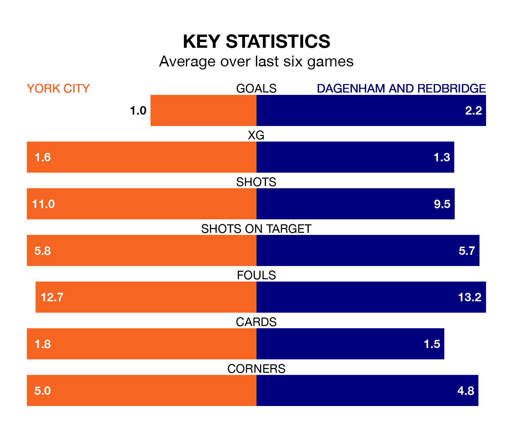

Dagenham and Redbridge travel to York City on Saturday in the National League.
The visitors come into the game on the back of a win in their last match, having beaten Oxford City 7-1 at home, with three goals from Joshua David Rees, two from Inih Othneil Effiong, one from Ryan Hill and one from Francis William Vincent.
York, meanwhile, lost their last match, 1-0 against Dorking Wanderers.
In the last 10 years, York and Dagenham & Redbridge have played each other on eight occasions. York won one of them, Dagenham & Redbridge four, and they drew three times.
On average, York scored 0.9 goals and Dagenham & Redbridge 1.4 in those matches.
Their last meeting was on October 3, when York won 2-1 away.
York are 19th in the table after 32 games, of which they have won eight and drawn 13, earning 37 points.
Dagenham & Redbridge are six places ahead of City in 13th, with 11 wins and seven draws putting them on 40 points.
With 41 goals in 32 games so far this season, the hosts are scoring at below the league average rate with 1.3 goals per game. And they are conceding at an average rate, letting in 49 goals at a rate of 1.5 per game.
The away side are also below average scorers, with 1.4 goals per game, compared to a league average of 1.5. They have also conceded 1.4 goals per game.
York are in mixed form in the National League, with two wins and two draws from their last six games.
With three wins and a draw over that period, Dagenham & Redbridge's form is slightly better – they have taken 10 points from 18, compared to York's eight.
Updated: 13:04 (UTC), 16/02/24